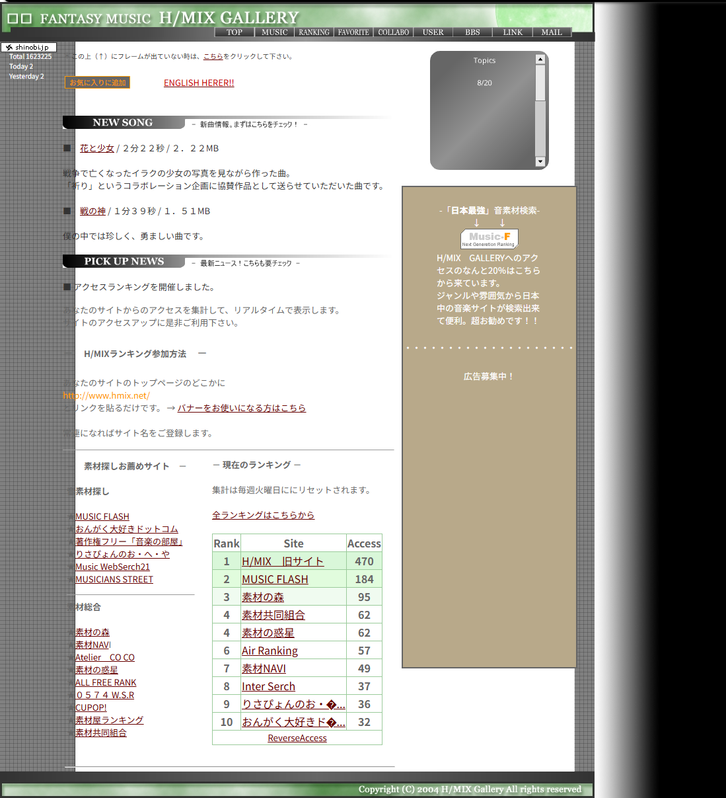
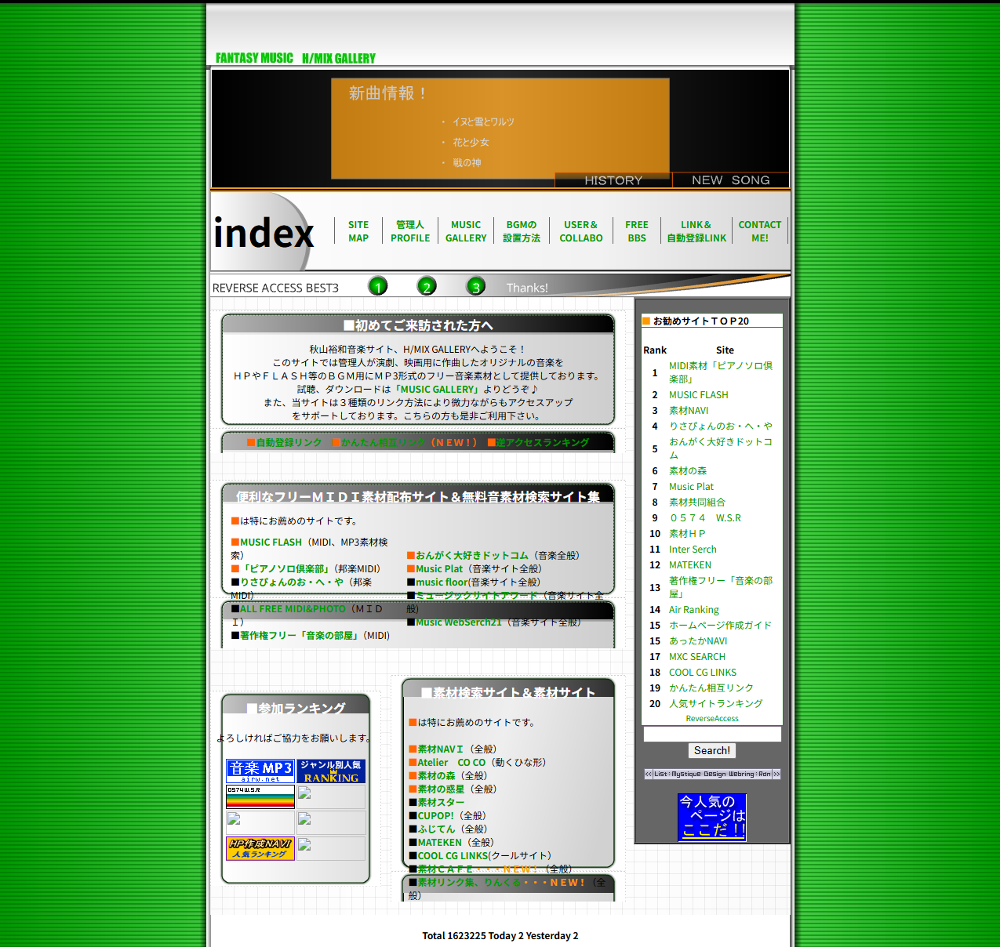
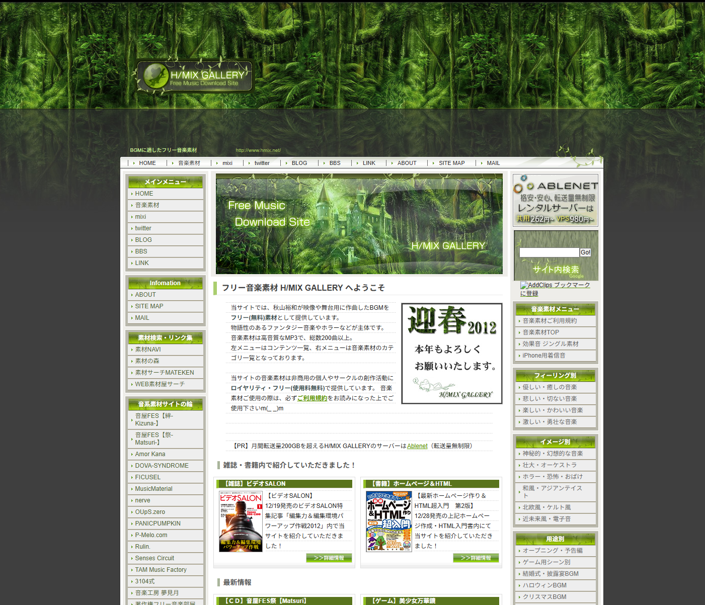
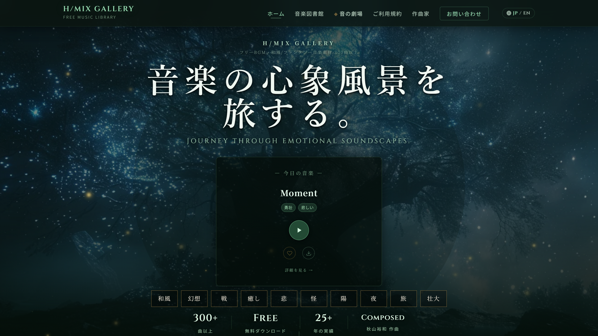

2001 — 2003
— The Beginning —
サイト草創期。MIDI素材時代からブロードバンド時代になり、
オーディオ素材オンリーで勝負をかけた最初の3年間。
Free Music Library
和風・ファンタジー・ホラー・癒し・バトル。
シーン・ジャンル・気分・尺で絞り込んで、
あなたの場面に合う一曲を、すぐに。
Immersive Experience
シーンに沈む、もうひとつの聴き方。
音楽が空間そのものになる体験を。
音 を 磨 く、道 具 箱。
作曲家が本気で作る、ブラウザで動く実用ツール集。
Compressor をはじめ、これから次々と道具が増えていきます。
機能豊かな「音楽図書館」と、情景で出逢う「音の劇場」。二つの扉のどちらを開けても、あなたの物語に響く旋律がそこに待っています。
心を揺らす音に出会ったら、そっと「お気に入りの箱」へ。何度でも聴き返し、並べ替え、いつでも取り出せる——あなただけの小さな音楽帳。
箱の旋律を一括で再生。ダウンロードも商用利用のお申し出もここから。あなたの創作の旅へ、そのまま持ち出せます。
Your scenery awaits — eight worlds to wander.
8つの情景から、あなたの1曲を探してください。
Hirokazu Akiyama — Composer / H/MIX GALLERY
舞台・ゲーム・映像・物語のための音楽を、
25年以上にわたり制作してきた作曲家。
和風・幻想・RPGなど、独自の世界観を持つ楽曲が特徴です。
H/MIX GALLERY のすべての楽曲は、秋山が作曲・編曲しています。
Site History
2002年から、ひとりの作曲家が積み上げてきた音楽の図書館。
時代の節目で姿を変えながら、続いてきた旅路。

2001 — 2003
— The Beginning —
サイト草創期。MIDI素材時代からブロードバンド時代になり、
オーディオ素材オンリーで勝負をかけた最初の3年間。

2004 — 2011
— The Expansion —
ホームページビルダーで頑張って作った手作りのウェブサイト。
当時はランキングサイトからの流入が中心で、 TOPがリンクまみれ。 笑

2012 — 2026
— The Renaissance —
リニューアル当初、 トップ画像はFLASHで動いていて雲とか出てカッコよかった。
最盛期は1日2000人以上が訪れた。

2026
— The Evolution —
現代化と Theater 体験。 300曲超のライブラリ、
没入型サウンドギャラリー、 H/MIX TOOLS の展開。 25年目の進化。
And now, the journey continues.
まだ保存した曲はありません。
♡ を押して旅の記録を残しましょう。